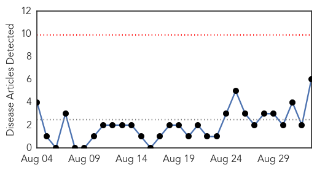
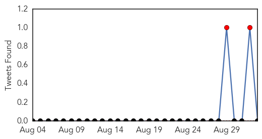
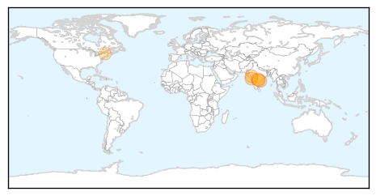
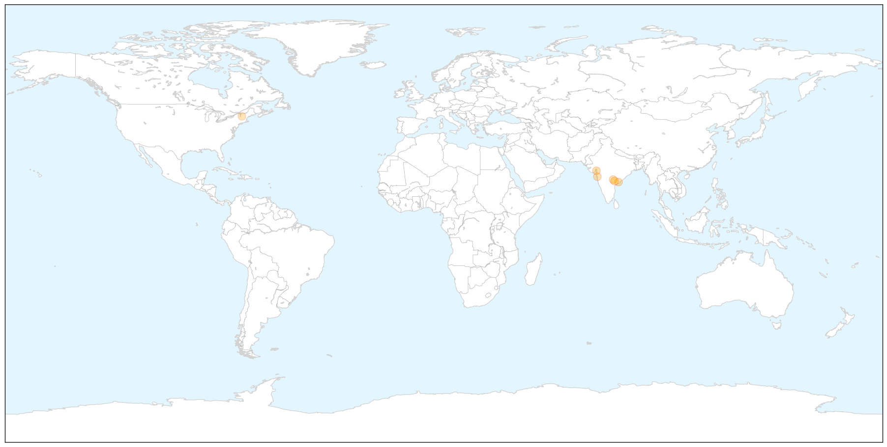
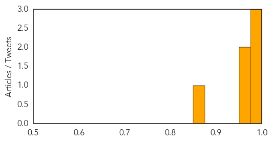
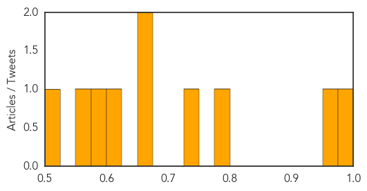

Swine Flu
30-Day Web Trend
0 alerts, 0 warnings

30-Day Twitter Trend
2 alerts, 0 warnings

Article Locations

X

Article Confidences
Top Articles:
Top Tweets:
-
No tweets found for Sep 02, 2015
Hepatitis
30-Day Web Trend
0 alerts, 0 warnings

30-Day Twitter Trend
0 alerts, 0 warnings

Article Locations


Article Confidences
Top Articles:
- 0.992
- News Scan for Sep 02, 2015
- 0.957
- Hepatitis B cases rise in Dehradun, doctors fear epidemic in future
- 0.776
- Summit Focuses on 400 Million with Hepatitis
- 0.727
- Putting an end to global health's 'silent killer'
- 0.659
- World Hepatitis Summit harnesses global momentum to eliminate viral hepatitis
- 0.655
- World Hepatitis Summit harnesses global momentum to eliminate viral hepatitis - World
- 0.601
- Glasgow to host first world hepatitis summit
- 0.598
- World Hepatitis Summit harnesses global momentum to eliminate viral hepatitis
- 0.555
- Costly Hepatitis C Drugs for Everyone?
- 0.501
- Are Statins Bad For Me? Personalized Medicine Can't Yet Say
Top Tweets:
-
No tweets found for Sep 02, 2015